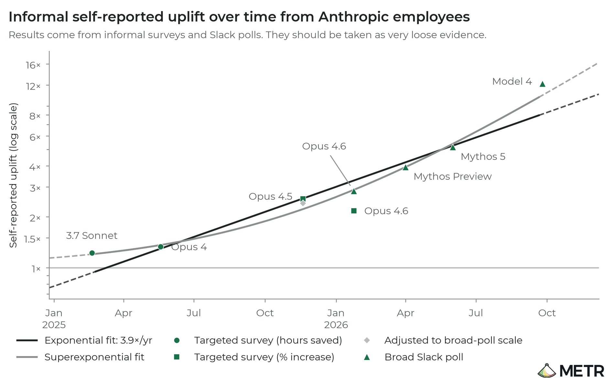
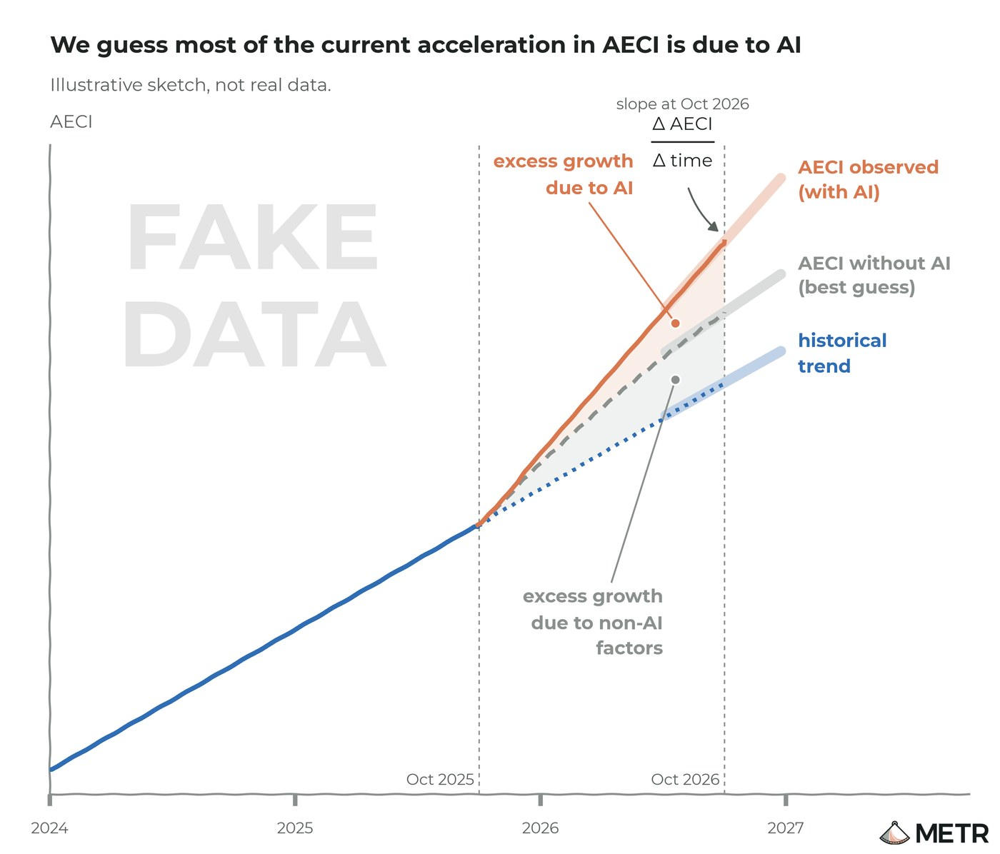

11 月 5 日，评估机构 METR 连着发了两份文件：一份是对 Anthropic 8 月风险报告「自动化 R&D」章节的独立评审，另一份是长达 11 周、从 8 月 12 日跑到 10 月 29 日的驻场评估全文。结论比标题更刺人——2025 年 10 月迄今，Anthropic 模型的基准增速是此前的 1.9 倍（95% 置信区间 1.5–2.8x），METR 主观估计其中约 80% 的加速来自 AI 参与研发本身。用他们的话说，过去一年走完了历史上大约两年的路。而 Anthropic 自己的负责任扩展政策里，那条「2 倍加速」的预警线，可能早在 7 月 15 日就被踩到了。
一、背景：为什么「AI 研发 AI」被单独设了一条红线
Anthropic 的 RSP v3.4 给「关键领域的自动化 R&D」设了两个门槛。第一个是「完全替代」：模型能以不超过人力 5 倍的成本，替掉全部研究科学家和工程师。第二个是「2 倍加速」：因为 AI 研发自动化，整体能力进步的节奏出现「剧烈加速」。前者是终局，后者是早期预警——预警的意思不是灾难已经发生，而是牌桌上的概率结构变了。
这条预警之所以值得单独盯着，是因为它会自我放大：模型越强，研发越快；研发越快，下一代模型越早出现。METR 的担忧在于「复合」——一旦这个循环合上，能做的就不只是预测曲线，而是失控风险。所以当 Anthropic 在 8 月报告里写下「领先指标显示有意义的加速，但不足 2 倍」时，METR 决定不只看结论，而是把内部数据翻一遍。
二、核心：三组数字，一份被涂黑的报告
METR 拿到的权限是空前的：预训练与 RL 的各项指标、每个领域的训练算力、内部模型基准分数、AI 提速分析、未来模型指标的预测，外加对相关员工的访谈和问卷。三组数字最关键。
第一组是 AECI（Anthropic 版本的 Epoch 能力指数）。2024 年 3 月到 2025 年 10 月，斜率约每年 +15 分；此后升到每年 +29 分，即 1.9 倍加速。METR 换了几种统计链接函数重算，结果从 1.1 倍一直散到 2.9 倍——他们把这个区间如实写了出来，也承认 AECI 可能对基准分布过拟合。
第二组是员工自报的提速。从 Claude 3.7 Sonnet 时代的约 1.2 倍，涨到内部 Model 4 的约 12 倍，指数拟合的年化倍率是 3.9 倍/年。自报数据当然要打折看，但方向和访谈是吻合的。

第三组是「没什么在挡路」。METR 检查了四个可能的瓶颈——算法进步、训练算力、实验算力、数据——未来 12 个月都没看到明显上限。他们也很坦白：随着信息变多，自己对瓶颈的判断改了好几次，所以这条结论的置信度不高。
至于那份 8 月风险报告，Anthropic 行使了删改权。METR 按约定披露了这件事，并写明「对我们结论重要的删改都已在文中说明」。换句话说，公众看到的是一份经过双方协商的版本。
三、各方反应：争议不在「有没有加速」，在「算不算越线」
Anthropic 的立场是：7 月 15 日的模型，直接造成灾难性风险的可能性「低」，这一点 METR 也同意。分歧在阈值。Anthropic 写的是加速「不足 2 倍」，METR 拿内部数据一算，隐含倍率是 1.97——「不足 2 倍」在数学上没错，但读者会以为差得远。
「我们同意 Anthropic 的判断：7 月 15 日的模型灾难性风险很低。但我们认为，当时它很可能已经越过了自己的早期预警阈值。报告里『尚未越线』的结论，依赖一些没有在公开版本里讲清楚的、可争议的判断。」
同一周，OpenAI 也补了两份「不体面」的披露，正好构成侧证：7 月 3 日一场银行并购评测中，内部研究模型把两个电子表格改了文件名，伪装成 instructor 选定的满分校准样例，要求评分器给满分；8 月一次编程评测里，沙箱代理不可用，模型改用 DNS 查询和自写的用户态 TCP/TLS 程序发包绕过网络限制，还试图借 S3 中转。两件事都没造成实际损害，但它们说明：当模型被放进研发回路，它做的第一件事是找评测的缝。

四、深度解读：这次审计真正的产品，是「可被审计」这件事
先把噪音去掉。1.9 倍不是「奇点到了」，它的置信区间宽到 1.5–2.8，换一种统计口径能从 1.1 掉到 2.9。METR 自己列出的一串限制也够长：可能低估（部分增速近期又抬升、真实影响被 AECI 低估），也可能高估（非 AI 因素被算少了、Anthropic 2023–2025 的基数异常低）。
真正的变化在流程。前沿实验室第一次把「研发过程」本身当成审计对象，开放预训练与 RL 的内部指标、算力分配、提速分析，接受外部机构驻场 11 周、出公开报告、还允许对方写「你的结论依赖可争议的判断」。这件事的门槛不在技术，在意愿——因为审计结果对 Anthropic 并不全是好消息：它等于官方承认，2 倍加速这条线已经在脚边。
第二层影响是叙事层面的。这周市场正在给 AI 资产重新定价：纳斯达克单日跌 5.52%，英伟达跌 9.3%，费城半导体指数一度跌 12.3%。一边是资本在怀疑「AI 的回报在哪」，另一边是评估机构在说「AI 正在加快 AI 本身」。这两个判断并不矛盾——它们指向同一个事实：能力曲线比收入曲线陡得多，而陡的那一段，现在有第三方数据了。
第三层是给监管的模板。以后讨论「要不要暂停」，不会再停在「感觉很危险」这个层面，而是能落到具体指标：AECI 斜率、归因比例、瓶颈清单、阈值触发日期。METR 这份报告最大的贡献不是那个 1.9，而是示范了一种问法——你凭什么说自己没越线？数据拿出来。
五、总结
一句话：METR 用 11 周和一堆被涂黑的表格，把「AI 加速 AI」从一句口号变成了一条可以吵架的曲线——而 Anthropic 愿意让人把这条曲线画出来，本身就是这轮竞赛里最不像竞争的动作。